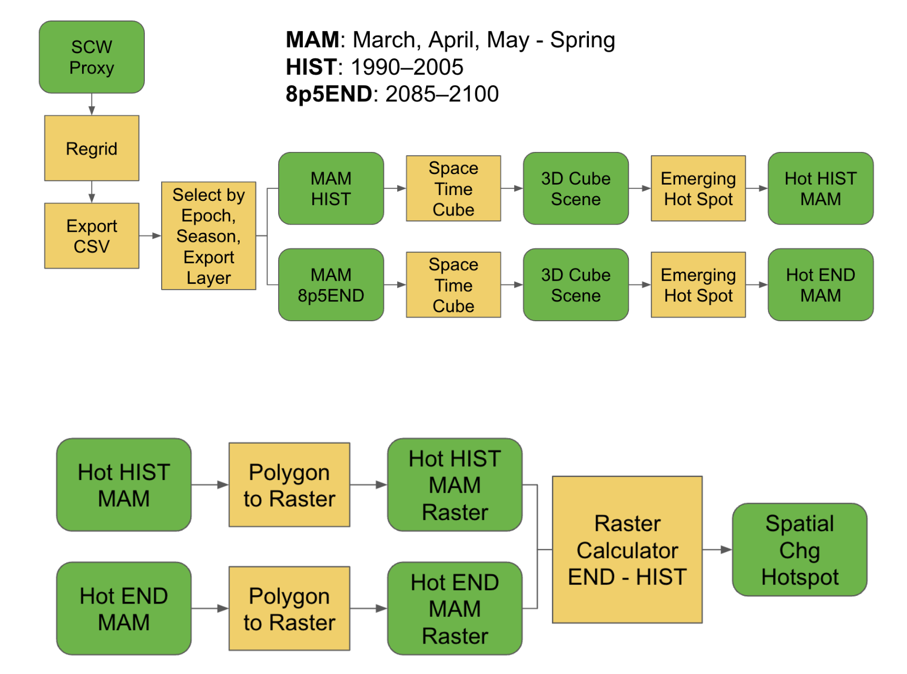
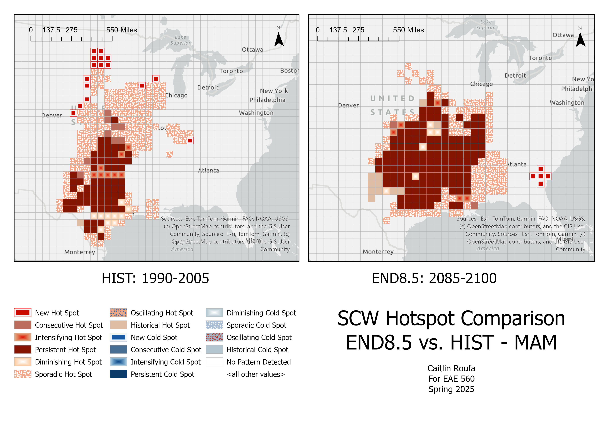
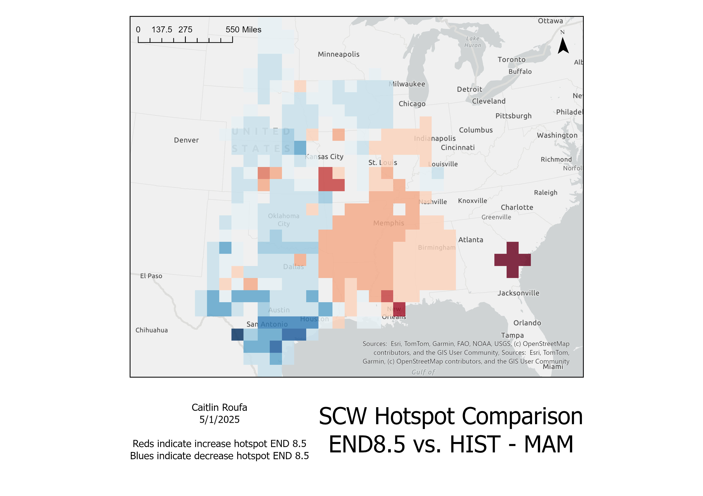
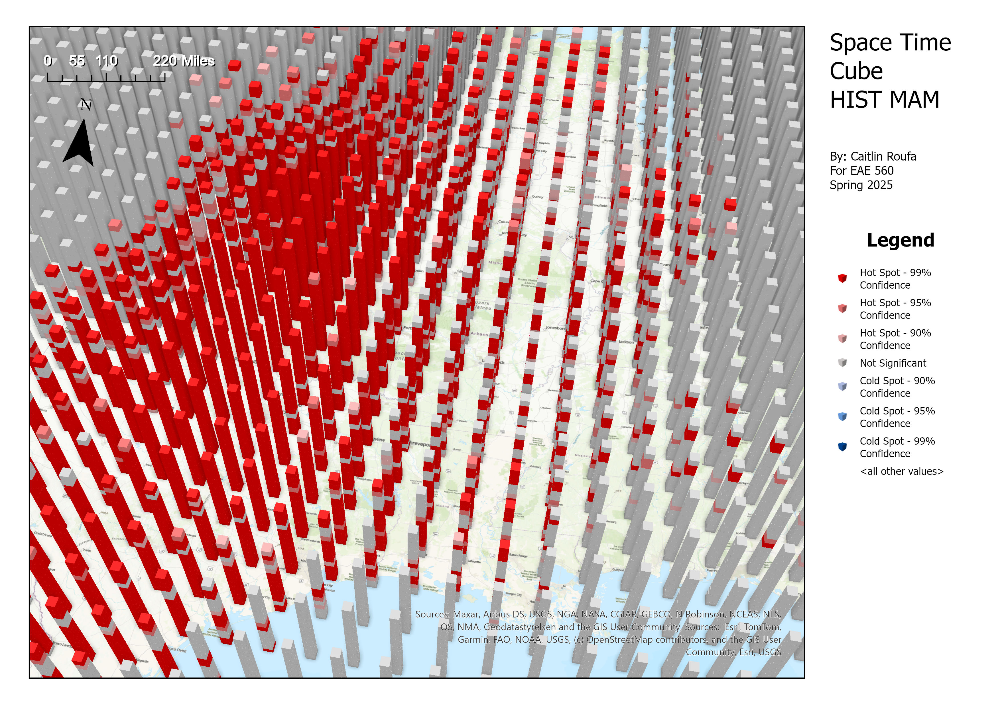
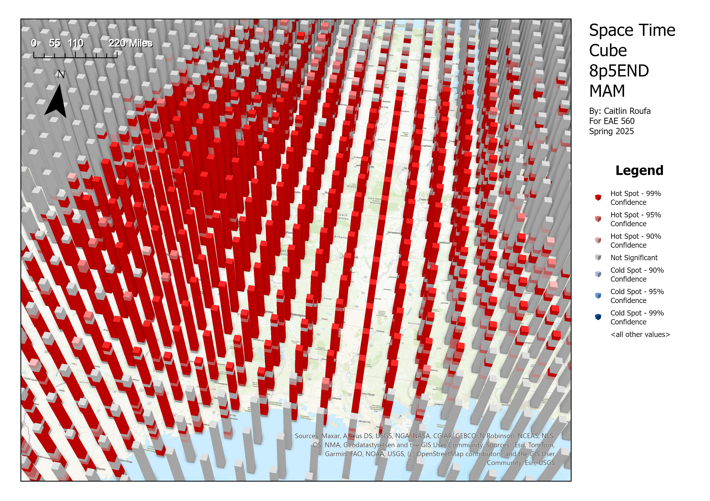

GIS class case study · EAE 559 · Spring 2025
Where might severe storm hotspots shift in a warmer climate?
Severe thunderstorms are part of life across much of the United States, but the places that experience the most severe storm activity may change as the climate warms. What happens if the areas with the greatest concentration of storms shift toward regions with more people, homes, businesses, and infrastructure? For my EAE 559 Geographic Information Systems term project, I used high resolution climate simulations and GIS tools to explore changes in the geographic distribution of severe convective storm activity. I focused on spring (March, April, and May), comparing a historical simulation with an end-of-century high emissions scenario.
The question
Why look at where storms happen?
Severe convective storms can produce tornadoes, damaging winds, and large hail. These hazards affect homes, agriculture, transportation, businesses, and other infrastructure, often with substantial economic and societal costs. Previous research has suggested that some types of severe storm activity could shift eastward in a warming climate, raising questions about how the geographic distribution of storms might evolve, and whether communities in more populated regions could experience additional exposure.
What I wanted to find out:
- How might the spatial distribution of severe convective storm activity change under future climate conditions?
- Which regions show persistent, emerging, or declining hotspots?
- What could these changes mean for the communities and infrastructure in those regions?
The approach
How can we study future storm hotspots?
I used the WRF-BCC convection-permitting climate simulations developed by Gensini et al. 2023. These simulations use the Weather Research and Forecasting (WRF) model at 3.75-km horizontal resolution, with boundary conditions derived from a bias-corrected global climate model.
For this class project, I compared two simulations: the historical period (HIST, 1990–2005) and the end-of-century high emissions scenario (END8.5, 2085–2100). The larger simulation dataset includes other scenarios and periods, but I focused on those two epochs for the spring season.
Because the model output does not directly identify individual tornadoes, damaging wind events, or hailstorms, I used a synthetic severe storm proxy. For this class analysis, detections required upward vertical velocity of at least 25 m/s and simulated radar reflectivity of at least 40 dBZ.
I imported the detections into ArcGIS Pro, organized them by season and simulation period, and used space time cubes to examine how storm concentrations varied across space and time. Emerging Hot Spot Analysis identified persistent and more intermittent spatial clusters.
Finally, I compared the historical and future hotspot maps to identify where the geographic concentration of synthetic storm activity changed.

The proxy identifies modeled storm activity, not individual observed tornadoes, damaging winds, or hail reports. The 25 m/s threshold was used in this earlier class exercise, but my subsequent published research includes additional proxy evaluation and refinement.
The findings
Where did the spring hotspots move?
In the historical simulation, the strongest and most persistent springtime hotspot was centered over the Great Plains, extending from Texas northward toward the Dakotas. Other regions experienced less consistent concentrations of synthetic storm activity. In the end-of-century RCP8.5 simulation, the concentration of springtime storm activity extended farther east and south. Persistent and intermittent hotspots appeared across the South Central Plains, southern Midwest, and parts of the South, with more sporadic hotspots toward the Southeast.


The hotspot difference map compares GIS classifications, not a direct numerical change in tornadoes or other individual hazards. Its color values indicate relative spatial patterns rather than storm count differences. Click or tap the figures to enlarge them.
The main takeaway:
The GIS analysis suggests an eastward and southward shift in the concentration of springtime synthetic severe storm activity under the end-of-century high emissions scenario. The shift could have important implications for regions with larger populations and more developed infrastructure.
Explore the space time cube visualizations
These figures show the spatial and temporal organization of the simulated storm detections. They helped identify where hotspots were persistent from year to year and where they were more sporadic.


Why it matters
What might an eastward shift mean for communities?
Changes in the geographic distribution of severe storms matter because the places they affect are not all equally populated or prepared. The South and Midwest contain extensive residential, agricultural, commercial, and transportation infrastructure, and many communities already experience substantial severe storm impacts. If severe storm activity becomes more concentrated in parts of these regions, future exposure could change even without considering additional population growth or development.
Why does this matter for preparedness?
Knowing where storm activity may increase can help inform discussions about building resilience, emergency management, shelter access, agricultural planning, and infrastructure design, but the impacts will also depend on where people live in the future, how communities develop, and what steps are taken to reduce vulnerability.
This class project examined the location of synthetic storm hotspots. It did not directly calculate future property damage, fatalities, or changes in exposure. Those questions would require additional housing, population, and vulnerability data.
Next steps
What else would help us understand these changes?
This was a focused springtime comparison using one future emissions pathway. A more complete assessment could examine:
- Additional emissions scenarios, including RCP4.5.
- Summer, fall, and winter changes in storm geography.
- Differences in how often synthetic storm detections occur, beyond hotspot classifications.
- Projected population, housing, and infrastructure exposure.
- Uncertainties in storm proxy identification and historical storm reports.
I have since extended my research on severe convective storms using the WRF-BCC simulations, including a published study of projected changes in storm frequency, seasonality, and geography.
Keep exploring
Related research and resources
Related research
- Gensini et al. (2023) — Description and evaluation of the WRF-BCC climate simulations.
- Ashley et al. (2023) — Projected changes in the geography and frequency of U.S. supercells.
- Roufa et al. (2026) — My published research on the future of severe convective storms in the United States.
Methods and preparedness
- ArcGIS Emerging Hot Spot Analysis — How spatial and temporal hotspot patterns are identified.
- ArcGIS Space Time Cubes — Organizing geographic observations across time.
- National Weather Service Severe Weather Preparedness — Planning, shelter, and safety resources for severe thunderstorms and tornadoes.
This page presents a Spring 2025 GIS class case study using modeled synthetic storm detections. The results represent one possible future climate scenario, not a deterministic forecast of individual severe storms or their impacts.